import pandas as pd
import matplotlib.pyplot as plt
df = pd.read_csv("data/processed/career_market_panel.csv")
TOTAL = len(df)
print(f"Total postings in baseline: {TOTAL}")Total postings in baseline: 258What Does the Data Analyst -> Data Scientist Market Look Like in NAICS 5182?
This page answers our Step 2 question: what does the market currently look like for our selected career pathway inside our selected industry? All charts below are generated live from data/processed/career_market_panel.csv – see Data Preparation for how this dataset was built and cleaned.
Total postings in baseline: 258vol = df["role_bucket"].value_counts()
fig, ax = plt.subplots(figsize=(8, 5))
vol.sort_values().plot(kind="barh", ax=ax, color="#457b9d")
ax.set_xlabel("Number of postings")
ax.set_title("Job Volume by Role Type")
ax.text(0.99, 0.02, f"Total postings analyzed: {TOTAL}", transform=ax.transAxes,
ha="right", va="bottom", fontsize=9, color="gray")
plt.tight_layout()
plt.show()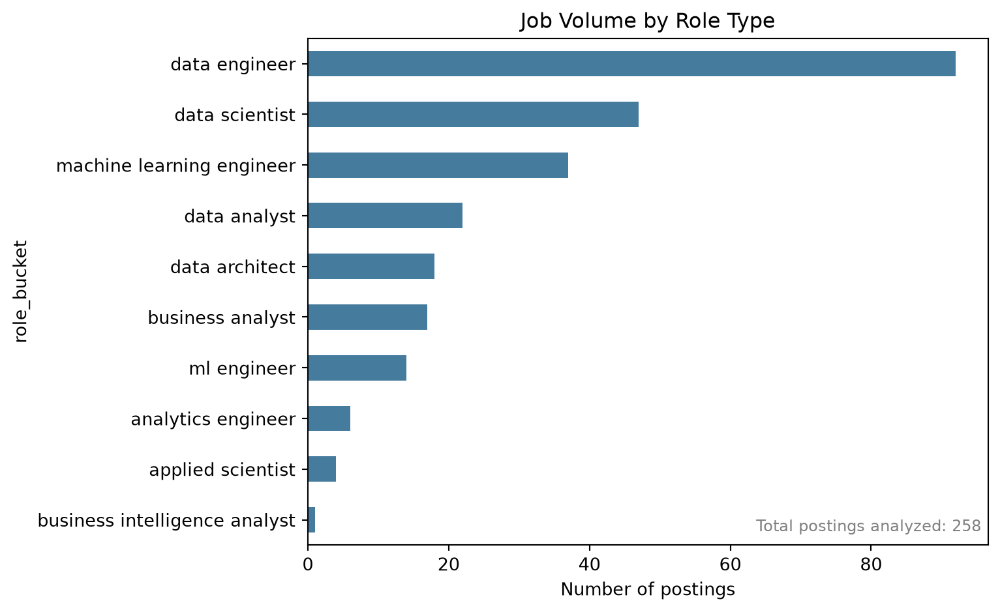
Interpretation: Data Engineer roles dominate this pool, followed by Data Scientist and Machine Learning Engineer roles. Pure “Data Analyst” titles are a smaller slice – this suggests that within NAICS 5182, the market skews toward more senior/technical data roles than entry-level analyst positions.
vol_sorted = vol.sort_values(ascending=False)
labels = vol_sorted.index.tolist()
sizes = vol_sorted.values.tolist()
pcts = [s / TOTAL * 100 for s in sizes]
fig, ax = plt.subplots(figsize=(9, 7))
colors = plt.cm.tab20.colors
wedges, _ = ax.pie(
sizes, startangle=90,
wedgeprops=dict(width=0.4, edgecolor="white"),
colors=colors,
)
import math
for w, pct in zip(wedges, pcts):
if pct >= 5:
ang = (w.theta2 + w.theta1) / 2
x = 0.78 * math.cos(math.radians(ang))
y = 0.78 * math.sin(math.radians(ang))
ax.text(x, y, f"{pct:.0f}%", ha="center", va="center", fontsize=9,
color="white", fontweight="bold")
ax.set_title("Share of Postings by Role Type")
ax.text(0, 0, f"Total postings\nanalyzed: {TOTAL}", ha="center", va="center",
fontsize=11, fontweight="bold")
legend_labels = [f"{l} ({s}, {p:.0f}%)" for l, s, p in zip(labels, sizes, pcts)]
ax.legend(wedges, legend_labels, loc="center left", bbox_to_anchor=(1.02, 0.5),
fontsize=9, frameon=False)
plt.tight_layout()
plt.show()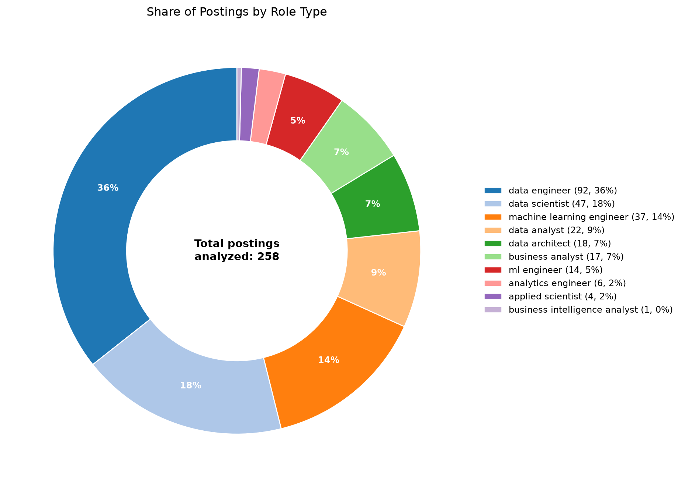
onet_counts = df["onet_name"].fillna("Not specified").value_counts()
fig, ax = plt.subplots(figsize=(9, 5))
onet_counts.sort_values().plot(kind="barh", ax=ax, color="#457b9d")
ax.set_xlabel("Number of postings")
ax.set_title("Job Count by ONET Occupation")
ax.text(0.99, 0.02, f"Total postings analyzed: {TOTAL}", transform=ax.transAxes,
ha="right", va="bottom", fontsize=9, color="gray")
plt.tight_layout()
plt.show()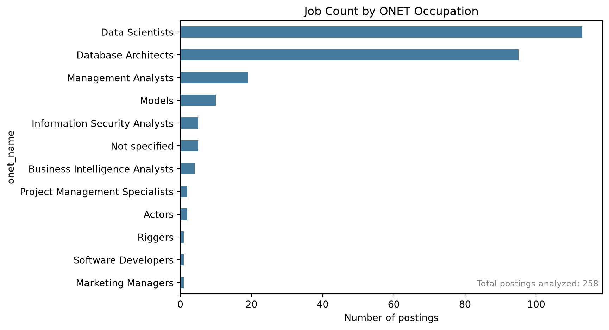
Data quality note: the source classifier’s ONET/SOC tags are not fully reliable for this dataset – categories like “Models,” “Actors,” and “Riggers” above are classifier errors on postings whose titles matched our career-pathway keywords (see Data Preparation for a specific example). They are kept here for transparency rather than silently removed, but should not be read as literal acting/modeling jobs.
sal_df = df.dropna(subset=["salary_mid"])
fig, ax = plt.subplots(figsize=(8, 5))
ax.hist(sal_df["salary_mid"], bins=20, color="#e63946", edgecolor="white")
ax.set_xlabel("Estimated annual salary (USD)")
ax.set_ylabel("Number of postings")
ax.set_title("Salary Distribution")
ax.text(0.99, 0.95, f"Total postings analyzed: {TOTAL}\nWith salary disclosed: {len(sal_df)}",
transform=ax.transAxes, ha="right", va="top", fontsize=9, color="gray")
plt.tight_layout()
plt.show()
print(sal_df["salary_mid"].describe().round(0))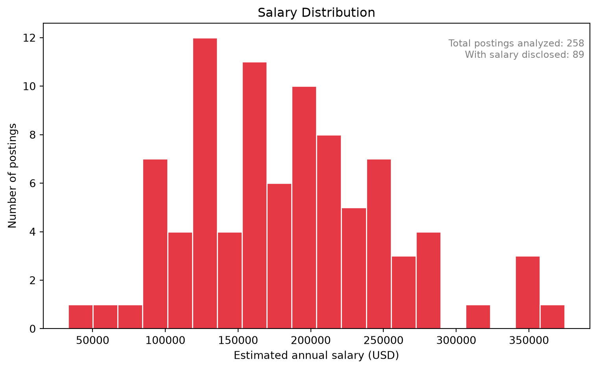
count 89.0
mean 184512.0
std 69813.0
min 33176.0
25% 128200.0
50% 180000.0
75% 225000.0
max 374750.0
Name: salary_mid, dtype: float64Interpretation: Only about a third of postings disclose salary, but among those that do, pay clusters between roughly $120K-$210K, with a long tail up to ~$375K driven by senior Data Scientist / ML Engineer roles. “Estimated” here means the midpoint of the posted range (or the full-time-equivalent of an hourly rate) – see Data Preparation for exactly how this was derived.
role_sal = sal_df.groupby("role_bucket")["salary_mid"].agg(["mean", "count"])
role_sal = role_sal[role_sal["count"] >= 2].sort_values("mean")
fig, ax = plt.subplots(figsize=(8, 5))
bars = ax.barh(role_sal.index, role_sal["mean"], color="#e63946")
ax.set_xlabel("Average estimated annual salary (USD)")
ax.set_title("Average Salary by Role Type")
for bar, v in zip(bars, role_sal["mean"]):
ax.text(bar.get_width() + 2000, bar.get_y() + bar.get_height()/2, f"${v:,.0f}",
va="center", fontsize=8)
ax.text(0.99, 0.02, f"Roles with 2+ salary-disclosed postings shown; total salary-disclosed: {len(sal_df)}",
transform=ax.transAxes, ha="right", va="bottom", fontsize=8, color="gray")
plt.tight_layout()
plt.show()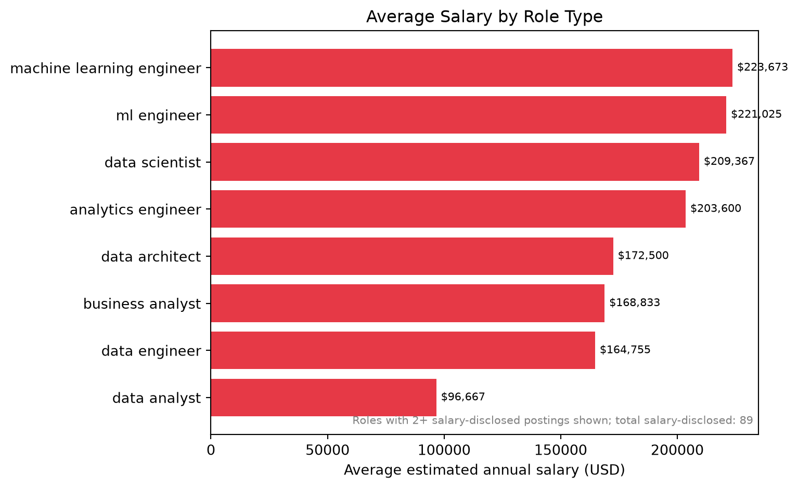
Interpretation: Machine Learning Engineer and Data Scientist roles command the highest average pay (~$220K and ~$209K), while Data Analyst sits lowest (~$97K) – a roughly 2.3x pay gap across this pathway. This is the clearest evidence yet of what moving from Data Analyst toward Data Scientist / ML Engineer is actually worth in this industry.
onet_sal_df = sal_df.copy()
onet_sal_df["onet_name"] = onet_sal_df["onet_name"].fillna("Not specified")
onet_sal = onet_sal_df.groupby("onet_name")["salary_mid"].agg(["mean", "count"])
onet_sal = onet_sal[onet_sal["count"] >= 2].sort_values("mean")
fig, ax = plt.subplots(figsize=(9, 5))
bars = ax.barh(onet_sal.index, onet_sal["mean"], color="#e63946")
ax.set_xlabel("Average estimated annual salary (USD)")
ax.set_title("Average Salary by ONET Occupation")
for bar, v in zip(bars, onet_sal["mean"]):
ax.text(bar.get_width() + 2000, bar.get_y() + bar.get_height()/2, f"${v:,.0f}",
va="center", fontsize=8)
ax.text(0.99, 0.02, f"Occupations with 2+ salary-disclosed postings shown; total salary-disclosed: {len(sal_df)}",
transform=ax.transAxes, ha="right", va="bottom", fontsize=8, color="gray")
plt.tight_layout()
plt.show()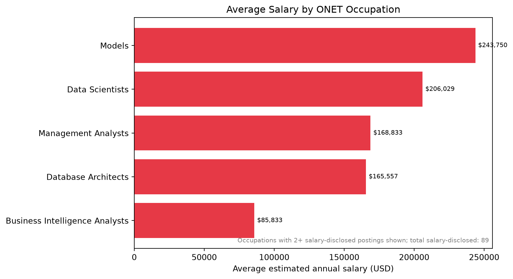
Same ONET data-quality caveat applies here – treat “Models” as noise, not a real high-paying occupation in this market.
state_sal_df = sal_df[sal_df["state_clean"] != "Unknown"]
state_sal = state_sal_df.groupby("state_clean")["salary_mid"].agg(["mean", "count"])
state_sal = state_sal[state_sal["count"] >= 2].sort_values("mean", ascending=False).head(10)
fig, ax = plt.subplots(figsize=(8, 5))
bars = ax.barh(state_sal.index[::-1], state_sal["mean"][::-1], color="#f4a261")
ax.set_xlabel("Average estimated annual salary (USD)")
ax.set_title("Top 10 Highest-Paying States")
for bar, v in zip(bars, state_sal["mean"][::-1]):
ax.text(bar.get_width() + 2000, bar.get_y() + bar.get_height()/2, f"${v:,.0f}",
va="center", fontsize=8)
ax.text(0.99, 0.02, "States with 2+ salary-disclosed postings shown", transform=ax.transAxes,
ha="right", va="bottom", fontsize=8, color="gray")
plt.tight_layout()
plt.show()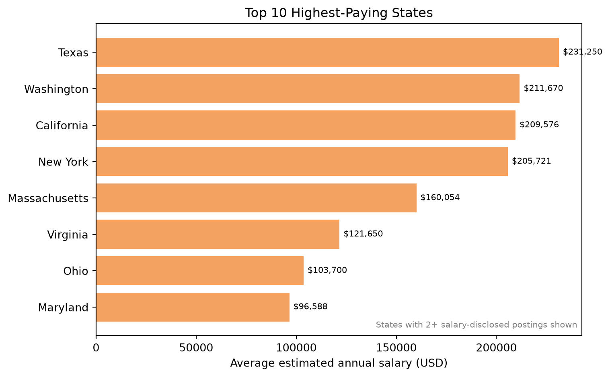
Interpretation: Texas, Washington, and California lead on average disclosed pay – notably, Texas edges out California here, likely reflecting a small number of high-paying postings rather than a broad state-wide premium (small sample size caveat applies).
co_sal_df = sal_df[~sal_df["company_name_clean"].str.startswith("Unknown")]
co_sal = co_sal_df.groupby("company_name_clean")["salary_mid"].agg(["mean", "count"])
co_sal = co_sal.sort_values("mean", ascending=False).head(10)
fig, ax = plt.subplots(figsize=(8, 5))
bars = ax.barh(co_sal.index[::-1], co_sal["mean"][::-1], color="#6d597a")
ax.set_xlabel("Average estimated annual salary (USD)")
ax.set_title("Top 10 Companies by Average Salary")
for bar, v in zip(bars, co_sal["mean"][::-1]):
ax.text(bar.get_width() + 2000, bar.get_y() + bar.get_height()/2, f"${v:,.0f}",
va="center", fontsize=8)
ax.text(0.99, 0.02, "Based on salary-disclosed postings only; small sample per company",
transform=ax.transAxes, ha="right", va="bottom", fontsize=8, color="gray")
plt.tight_layout()
plt.show()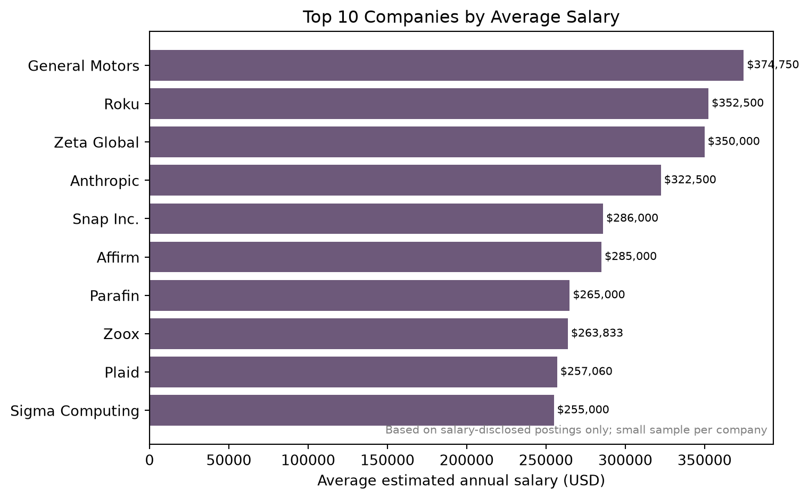
Interpretation: most companies here have only 1-2 salary-disclosed postings, so this is a small-sample view, not a robust employer-level benchmark – useful as a directional signal (e.g. General Motors, Roku, and several AI-native startups paying at the top) rather than a confident ranking.
loc = df[df["state_clean"] != "Unknown"]["state_clean"].value_counts().head(10)
fig, ax = plt.subplots(figsize=(8, 5))
loc.sort_values().plot(kind="barh", ax=ax, color="#2a9d8f")
ax.set_xlabel("Number of postings")
ax.set_title("Top 10 States by Job Volume")
ax.text(0.99, 0.02, f"Total postings analyzed: {TOTAL}", transform=ax.transAxes,
ha="right", va="bottom", fontsize=9, color="gray")
plt.tight_layout()
plt.show()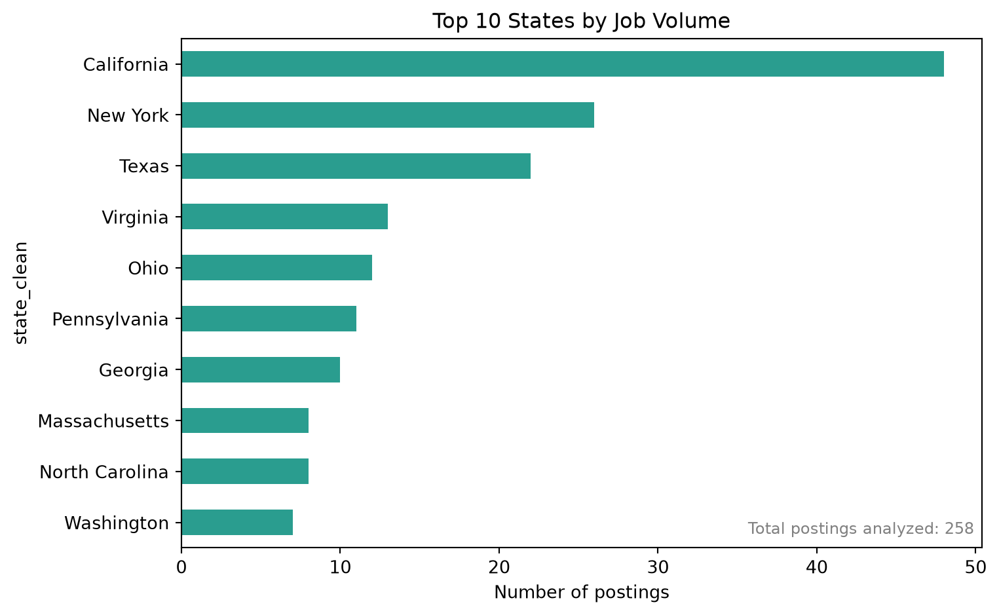
Interpretation: California and New York lead by a clear margin, with Texas, Virginia, and Ohio rounding out the top tier – consistent with major tech/finance hubs and the Northern Virginia data-center corridor. 16% of postings had no resolvable US state and are excluded from this chart rather than misattributed.
exp_df = df.dropna(subset=["experience_min_years"])
fig, ax = plt.subplots(figsize=(8, 5))
ax.hist(exp_df["experience_min_years"], bins=range(0, 17), color="#f4a261",
edgecolor="white", align="left")
ax.set_xlabel("Minimum years of experience required")
ax.set_ylabel("Number of postings")
ax.set_title("Experience Requirement Distribution")
ax.text(0.99, 0.95, f"Total postings analyzed: {TOTAL}\nWith experience stated: {len(exp_df)}",
transform=ax.transAxes, ha="right", va="top", fontsize=9, color="gray")
plt.tight_layout()
plt.show()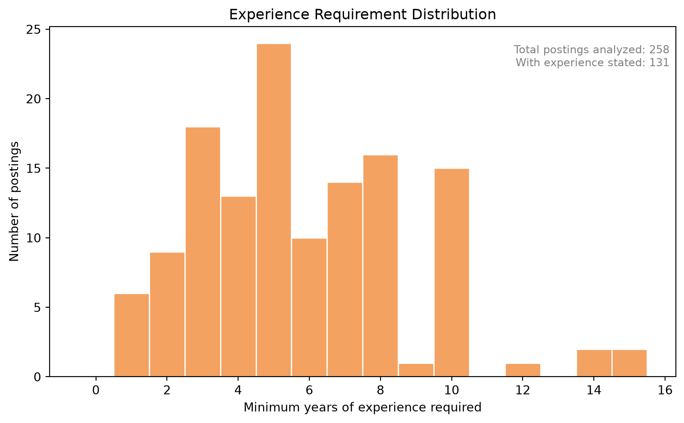
Interpretation: Where stated, most postings cluster around 3-8 years of experience – this is a market that skews mid-to-senior level rather than entry-level, which is a direct, actionable signal for a Data Analyst-pathway job seeker about how much experience they may need to build before this specific industry’s roles become attainable.
order = ["remote", "hybrid", "onsite", "unknown"]
remote_counts = df["remote_status"].value_counts().reindex(order, fill_value=0)
fig, ax = plt.subplots(figsize=(6, 5))
colors = ["#2a9d8f", "#e9c46a", "#e76f51", "#a8a8a8"]
ax.bar(remote_counts.index, remote_counts.values, color=colors)
ax.set_ylabel("Number of postings")
ax.set_title("Remote vs Onsite vs Hybrid vs Unstated")
for i, v in enumerate(remote_counts.values):
ax.text(i, v + 2, str(v), ha="center")
ax.text(0.99, 0.95, f"Total postings analyzed: {TOTAL}", transform=ax.transAxes,
ha="right", va="top", fontsize=9, color="gray")
plt.tight_layout()
plt.show()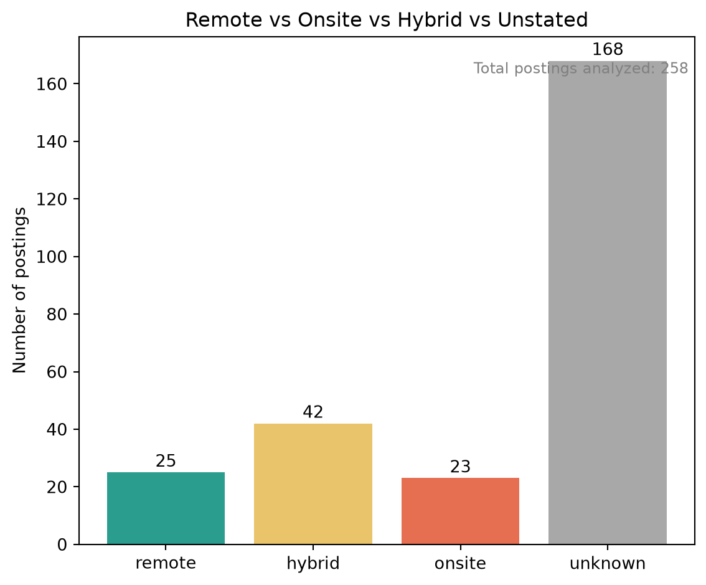
Interpretation: The majority of postings (65%) don’t explicitly state a remote/onsite policy at all – itself a notable market finding, not a data gap. Among postings that do specify, hybrid arrangements are the most common, followed by fully remote and then onsite.
hybrid_df = df[(df["remote_status"] == "hybrid") & (df["state_clean"] != "Unknown")]
hybrid_states = hybrid_df["state_clean"].value_counts().head(10)
total_hybrid = (df["remote_status"] == "hybrid").sum()
fig, ax = plt.subplots(figsize=(8, 5))
hybrid_states.sort_values().plot(kind="barh", ax=ax, color="#e9c46a")
ax.set_xlabel("Number of hybrid postings")
ax.set_title("Top 10 States by Hybrid Role Volume")
ax.text(0.99, 0.02, f"Total hybrid postings: {total_hybrid}", transform=ax.transAxes,
ha="right", va="bottom", fontsize=9, color="gray")
plt.tight_layout()
plt.show()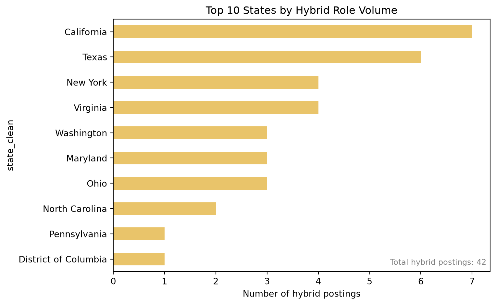
Interpretation: California and Texas lead in hybrid-specific postings, tracking their overall job volume lead rather than showing a distinct hybrid-specific hotspot.
emp_df = df[~df["company_name_clean"].str.startswith("Unknown")]
top_emp = emp_df["company_name_clean"].value_counts().head(10)
fig, ax = plt.subplots(figsize=(8, 5))
top_emp.sort_values().plot(kind="barh", ax=ax, color="#6d597a")
ax.set_xlabel("Number of postings")
ax.set_title("Top 10 Employers")
ax.text(0.99, 0.02, "Excludes unattributable ATS/aggregator listings", transform=ax.transAxes,
ha="right", va="bottom", fontsize=8, color="gray")
plt.tight_layout()
plt.show()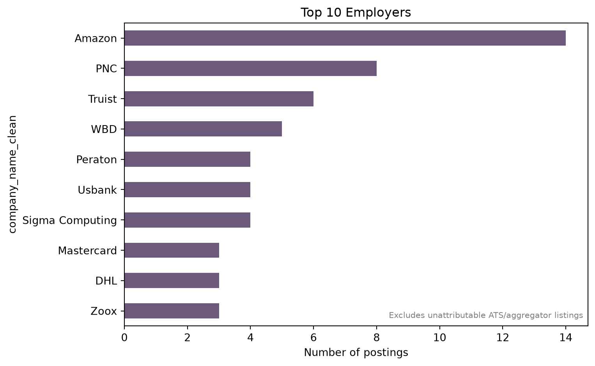
Interpretation: Amazon is the single largest poster in this pool, consistent with AWS’s scale within the Computing Infrastructure Providers / Data Processing industry. Several large financial institutions (PNC, Truist, US Bank, Mastercard) also appear prominently, reflecting how much cloud/data infrastructure work is now done at scale by non-“tech-native” companies. 14% of postings have no attributable real employer name (ATS portal artifacts or job-board aggregator listings) and are excluded from this ranking.
These findings set up our Step 3 skill-gap analysis: since this market rewards experience and skews toward more advanced, higher-paying roles, the next step is comparing the specific skills these postings require against a student’s current profile to identify concrete upskilling priorities for closing that ~2.3x pay gap.